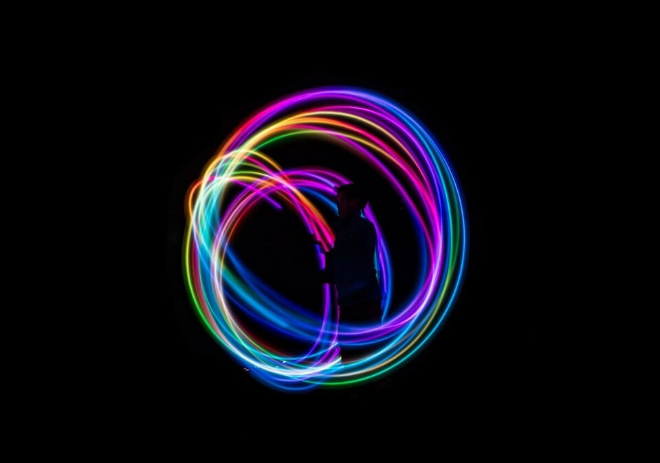

Trusted by thousands of callers nationwide
Aura Reading by Phone - Discover What Your Energy Is Telling You, 24/7
An aura reading reveals the energetic state you may not even realize you're carrying. Every reader on our line is hand-vetted by our master psychics - connect in under 60 seconds. Your first minute is $1 and you can hang up anytime.
- Hand-vetted readers
- Available 24/7
- Hang up anytime

Call and speak with a live reader for an aura reading that uncovers your energetic patterns, blocks, and strengths. No appointment, no waiting - first-time callers get an introductory rate of $1 per minute, or 15 minutes for $10, and you can hang up the moment you have your answer.
What Is an Aura Reading?
Your aura is the unseen field of energy that surrounds your body - often described as a low-level electromagnetic field, expressed in seven layers that each correspond to one of your chakras and reflect your emotional, mental, and spiritual health. It's the same field that techniques like Kirlian photography and aura cameras attempt to capture as color. An aura reading interprets the colors and patterns of that field to give you insight into where you are and what's influencing you.
How Does an Aura Reading Work by Phone?
Your reader connects to your energy through your voice and intention rather than physically seeing your aura. Energy isn't limited by distance, so a phone aura reading works just as well from anywhere - you simply describe what's going on and your reader tunes in.
Aura Colors and Their Meanings
Each color in your aura carries meaning. Your reader interprets your unique blend:
Red
Grounded, passionate, and physically driven - at home in the material world.
Orange
Flowing creative and sacral energy - expressive and adventurous.
Yellow
Intellectual power, curiosity, and a sharp, analytical mind.
Green
Growth, balance, and healing - comfortable and nurturing energy.
Purple / Indigo
Intuitive, empathic, and highly sensitive to others' energy.
White
A very quick mind - with a tendency toward perfectionism and nervous energy.
What an Aura Reading Reveals
Your current energetic state, the emotional blocks and stress you're carrying, your strengths, and where to focus to restore balance. Because your energy is always moving, your aura shifts with your state - which is why a reading reflects exactly where you are right now. You can read more about the aura and how it's interpreted.
More Aura Colors and What They Mean
Beyond the core colors, your reader may pick up these in your field:
Blue
Calm, honest communication and a caring, trustworthy nature.
Pink
Love, compassion, and a gentle, generous heart.
Gold / Violet
Spiritual wisdom, higher purpose, and strong intuition.
Turquoise
A natural healer and organizer, energized and influential.
Gray
Energy that's blocked or guarded - often temporary stress or skepticism.
Black
Held grief, exhaustion, or unreleased emotion that's ready to be cleared.
The Layers of the Aura
Your aura isn't a single band of color. Practitioners describe several layers radiating out from the body - commonly the physical/etheric layer closest to you, the emotional layer that holds feelings and moods, the mental layer of thoughts and beliefs, and the spiritual layers connected to purpose and intuition. Each is tied to one of the body's energy centers, or chakras. When a reader interprets your aura, they're sensing which layers are bright and flowing and which look dim, congested, or guarded - and what that says about where you are right now.
What Affects Your Aura
Because your aura reflects your state, it changes constantly. Stress and lack of sleep tend to dull and tighten it. Strong emotion floods it with the matching color. Physical health, the people you spend time with, your environment, and even unresolved past experiences all leave an imprint. This is exactly why an aura reading is so useful - it's a real-time snapshot of what you're carrying, not a fixed label.
Aura Reading vs. Chakra Reading vs. Energy Healing
These overlap but aren't the same. An aura reading interprets the colors and layers of your energy field to tell you what's going on. A chakra reading focuses on the seven energy centers and which are balanced or blocked. Energy healing goes a step further - actively working to clear and rebalance what the reading uncovered. Many callers start with an aura reading for clarity, then explore a clairvoyant reading or related session for deeper guidance.
How to Cleanse and Protect Your Aura
Your reader may suggest simple practices to keep your field clear: time in fresh air or near water, a few minutes of deep breathing or meditation, stepping back from draining people, sunlight, salt baths, and consciously setting an intention to release what isn't yours. None of this replaces medical or mental-health care - think of it as energetic hygiene alongside, not instead of, professional support.
Can You Learn to See Your Own Aura?
Many people can train themselves to perceive at least the inner aura. A common method: sit someone against a plain, neutral wall in soft, even light, then look slightly past the edge of their head rather than directly at it, letting your eyes relax and unfocus. After a minute or two a faint band - often colorless at first, then tinged - may appear around the outline. Practicing on your own hand against a white background works too. Most people sense the aura as a feeling before they ever "see" a color, which is normal. A professional reader has simply developed this perception over years, which is why a guided aura reading reveals far more nuance than early self-practice - but learning the basics can deepen what you get from a session.
Aura Reading for Relationships, Work, and Well-Being
In relationships, your reader may notice where your field contracts or guards - often around a specific person or unresolved conflict - and what it would take to open it again. For work and decisions, a dim or scattered field can point to burnout or a path that isn't truly yours, while a bright, steady one signals you're aligned. For well-being, an aura reading flags stress and emotional weight you've normalized and stopped noticing - not as a diagnosis, but as an early prompt to slow down and tend to yourself before it compounds.
How to Prepare for an Aura Reading
Find a quiet space, take a few deep breaths, and set an intention for what you want clarity on. Stay open - your reader will describe what they sense and help you understand what it means for your life.
Find Out What Your Energy Is Really Saying
Your aura is telling a story you can't see. We'll connect you with the right hand-vetted reader in under 60 seconds. $1/min first call · 15 minutes for $10 · hang up anytime · 100% satisfaction promise.
Call (888) 920-6662 NowWhat Callers Say About Their Aura Reading
"She picked up the exact tension I'd been carrying and the color shift made instant sense. Walked away knowing what to release instead of just feeling 'off.'"
"Didn't expect a phone aura reading to land, but the description of my energy was uncanny - and the cleansing tips actually helped over the next week."
Explore every reading type on our phone psychic readings hub, or try a clairvoyant reading for deeper guidance.
Aura Reading - Frequently Asked Questions
What is an aura reading?
It interprets the energy field around you - believed to reflect your emotional, mental, and spiritual state - through its colors and patterns.
How does an aura reading work over the phone?
Your reader connects through your voice and intention; energy isn't limited by distance, so a phone aura reading works from anywhere.
What do aura colors mean?
Red: grounded/passionate. Orange: creative. Yellow: intellectual. Green: growth/balance. Purple/indigo: intuitive/sensitive. White: quick, perfectionist mind.
Can my aura change?
Yes - energy is always moving, so your aura shifts with your state. A reading reflects where you are right now.
What can an aura reading reveal?
Your energetic state, emotional blocks, stress, strengths, and where to focus to restore balance.
How much does it cost?
First-time callers pay $1/min, or 15 minutes for $10. Returning callers pay the per-minute rate, and you can hang up anytime.
Do I have a "bad" aura color?
No color is bad. Darker or murky tones usually point to stress or held emotion that's ready to clear - useful information, not a verdict.
What's the difference between an aura and a chakra reading?
An aura reading interprets your overall energy field and its colors; a chakra reading focuses on the seven specific energy centers and any blocks.
How often should I get an aura reading?
Whenever you feel a shift - a big decision, a stressful stretch, a fresh start. Since your aura changes with your state, each reading is a new snapshot.
Get Your Aura Read Now
Here's what happens when you call: you're connected to a hand-vetted reader in under 60 seconds, they tune into your energy, and you hang up with a clear picture of what's influencing you.
- Hand-vetted reader
- Connected in under 60 seconds
- $1/min first call · 15 min for $10
- Hang up anytime
- 100% satisfaction promise